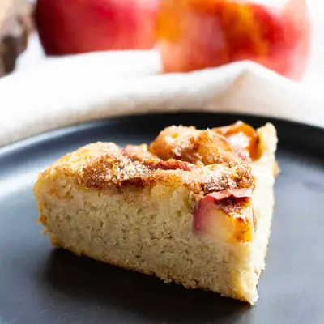

Vegan Apple Cake

Ingredients
- 1 1/2 cups all purpose flour
- 1 tbsp baking powder
- 1/2 tsp salt
- 1/2 cup coconut oil (in its solid form)
- 1/2 cup raw sugar
- 1 tsp vanilla extract
- 1 ripe banana
- 3/4 cup soy milk
- 2 medium apples (sliced into 8 pieces each)
- 1/4 cup raw sugar
- 1 tbsp cinnamon
Steps
- Preheat oven to 350 degrees F. Line a 9 inch baking pan with parchment paper, and grease the sides of the pan with coconut oil.
- In a medium bowl, sift together the flour, baking powder, and salt. Set aside.
- In a large mixing bowl cream together coconut oil, sugar, and vanilla using a hand or stand mixer.
- Add one banana cut into slices. Cream together until combined and light and fluffy. Add the flour to the wet ingredients a little at a time, alternating with soy milk.
- Add batter to the prepared cake pan and spread evenly across the top.
- Slice and core apples into 8 pieces each or 16 pieces all together using an apple corer. Place apples in a circular pattern on top of the batter, lightly pressing the edges into the batter.
- Combine cinnamon and 1/4 cup of raw sugar in a small bowl. Sprinkle on top of the apples.
- Allow the cake to cool in the pan on a wire rack for about 10-15 minutes. Run a thin, sharp knife or an offset spatula around the edges of the cake. Place a serving plate on top of the cake and flip it so that it releases from the pan. The will be upside down. Take another plate and flip it again; it will be right side up. Allow the cake to cool completely before slicing and serving.
Recipe by Anjali Shah · The Picky Eater, from The Picky Eater. Saved here for personal use; the original has the full notes, tips and photos. Open original